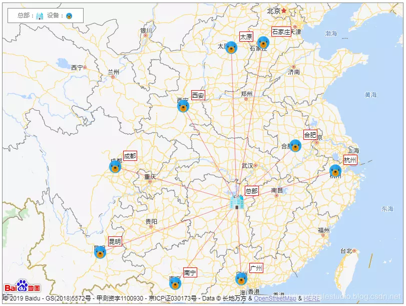

百度地图开放平台功能强大，使用简单，为地图的自定义提供了非常方便的途径！
本文以绘制一张全国机器辐射图为例记录其基本使用方法，效果如下图：

图中包括了带图标和文本的标注，连线以及图例。
说到地图，不得不说坐标。
我以为，GPS获取经纬度之后，把经纬度丢给地图就可以了。但那真的是自以为。
来看看实际情况，以下是百度开发文档里的描述：
目前国内主要有以下三种坐标系：
WGS84：为一种大地坐标系，也是目前广泛使用的GPS全球卫星定位系统使用的坐标系。
GCJ02：又称火星坐标系，是由中国国家测绘局制订的地理信息系统的坐标系统。由WGS84坐标系经加密后的坐标系。
BD09：为百度坐标系，在GCJ02坐标系基础上再次加密。其中bd09ll表示百度经纬度坐标，bd09mc表示百度墨卡托米制坐标。
非中国地区地图，服务坐标统一使用WGS84坐标。
百度对外接口的坐标系为BD09坐标系，并不是GPS采集的真实经纬度，在使用百度地图JavaScript API服务前，需先将非百度坐标通过坐标转换接口转换成百度坐标。
通过 GPS 获取的为 WGS84，在百度地图上使用前要转换为 BD09，百度提供了相应的 api 进行坐标转换，文档地址：http://lbsyun.baidu.com/index.php?title=webapi/guide/changeposition
http://api.map.baidu.com/geoconv/v1/?coords=114.21892734521,29.575429778924&from=1&to=5&ak=s1eeiQEfDF0WZfdfvLgHbG2Ru49UNCrn
返回结果：
{
status : 0,
result :
[
{
x : 114.23074871003,
y : 29.579084787993
}
]
}具体还可参考下这篇文章：https://www.cnblogs.com/yesicoo/p/4668642.html
如果坐标是静态的，或测试用，可以直接通过百度地图提供的“坐标拾取器”工具来获取经纬度。
工具地址：http://api.map.baidu.com/lbsapi/getpoint/index.html
点哪就获取哪的坐标，此坐标不用再转换，复制过来即可以使用。
有好些站点可以下载图标，如：https://easyicon.net，可以获取一些图标文件。至于商用的要求则要看看站点说明。
如下图，这里准备总部与机器的图标下载保存为 head.png、machine.png。
地图API的使用需要先申请一个 ak，为了体验方便，这里已经申请了一个可以直接使用的 key，在页面中可直接加入以下引用。
<script type="text/javascript" src="http://api.map.baidu.com/api?v=2.0&ak=s1eeiQEfDF0WZfdfvLgHbG2Ru49UNCrn"></script>使用以下语句，定义全局的地图对象
// 百度地图 API 功能对象
var map = null;
if (BMap) {
map = new BMap.Map("allmap"); // id=allmap 的容器内显示
map.enableScrollWheelZoom();
}标注使用 BMap.Marker，可以为其指定 Icon与Label。为了方便后续使用，本例定义以下函数，指定位置、图标（本例中可用已经下载的图标 head，machine）以及文本即可。
/**
* 指定经纬度，图标，标注文本
* 在地图上添加标注
* longitude 经度
* latitude 纬度
* icon 图标
* text 标注文本
**/
function addMarker(longitude, latitude, icon, text) {
if (!map) return;
var point = new BMap.Point(longitude, latitude);
var myIcon = new BMap.Icon(icon + ".png", new BMap.Size(32, 32));
// 指定位置及标注的图标
var marker = new BMap.Marker(point, { icon: myIcon }); // 创建标注
if(text){
var label = new BMap.Label(text, { offset: new BMap.Size(32, -16) });
marker.setLabel(label);
}
// 添加到地图上
map.addOverlay(marker);
}连线实际使用的是绘制多边形的功能，只是当只指定了两个点时，就是一根线。同样，这里定义一个函数以方便直接调用。
/**
* 指定起止经纬度，绘制连接线
*
* longitudeFrom 经度
* latitudeFrom 纬度
* longitudeTo 经度
* latitudeTo 纬度
**/
function addLine(longitudeFrom, latitudeFrom, longitudeTo, latitudeTo) {
if (!map) return;
var pointFrom = new BMap.Point(longitudeFrom, latitudeFrom);
var pointTo = new BMap.Point(longitudeTo, latitudeTo);
// 可以指定多点连接，此处只考虑两点
var line = new BMap.Polyline([pointFrom, pointTo], { strokeWeight:1, strokeOpacity:0.5, strokeColor:"red" });
// 添加到地图上
map.addOverlay(line);
}图例需要以地图定义的控件方式来添加，在控件的 initialize 事件中完成 DOM 元素的生成即可，为了体现过程本身，以下函数把 DOM 的html文本作为参数，由外部灵活定义。
/**
* 添加图例
* 实质就是在地图上添加自己的页面元素
*
* html 网页元素
**/
function addLegend(html){
var LegendControl = function () {
this.defaultAnchor = BMAP_ANCHOR_TOP_LEFT;
this.defaultOffset = new BMap.Size(10, 10);
}
LegendControl.prototype = new BMap.Control();
LegendControl.prototype.initialize = function (map) {
var le = $(html)[0];
map.getContainer().appendChild(le);
return le;
};
var legendCtrl = new LegendControl();
map.addControl(legendCtrl);
} 有了以上函数，综合起来就流程清晰了。以下坐标，均通过坐标拾取器获取。
// 机器类：经度，纬度，名称
function Machine(longitude, latitude, name){
this.longitude = longitude;
this.latitude = latitude;
this.name = name;
}
// 确定地图的中心位置与缩放级别
var center = new BMap.Point(110.423997,31.40979);
map.centerAndZoom(center, 6); // 级别 6，跨省视图
// 添加图例，自由写 html
addLegend("<div style='font-size:12px; color:gray; width:140px; padding:5px; background:white; text-align:center; border:solid 1px gray;'>总部：<img src='head.png' style='width:16px; vertical-align:middle;' /> 设备：<img src='machine.png' style='width:16px; vertical-align:middle;' /></div>");
// 总部位置
var head = { longitude : 112.918702343957, latitude : 28.30070516 };
addMarker(head.longitude, head.latitude, 'head', '总部');
// 所有机器位置
var machineList = [
new Machine(114.876143,38.113315,'石家庄'),
new Machine(112.521289,37.822014,'太原'),
new Machine(108.989008,34.328175,'西安'),
new Machine(117.230997,31.881961,'合肥'),
new Machine(103.984944,30.553819,'成都'),
new Machine(108.400295,22.862517,'南宁'),
new Machine(113.257181,23.169067,'广州'),
new Machine(120.174565,30.298715,'杭州'),
new Machine(102.881106,24.959705,'昆明')
];
// 添加所有机器并连线
for(var i=0; i<machineList.length; i++){
addMarker(machineList[i].longitude, machineList[i].latitude, 'machine', machineList[i].name);
addLine(head.longitude, head.latitude, machineList[i].longitude, machineList[i].latitude);
} 本文完整代码可从此处下载：
https://github.com/triplestudio/helloworld/blob/master/baidu_map_demo.html
在此基础上，可以根据需要进一步扩展功能，具体参考百度地图开放平台开发文档：